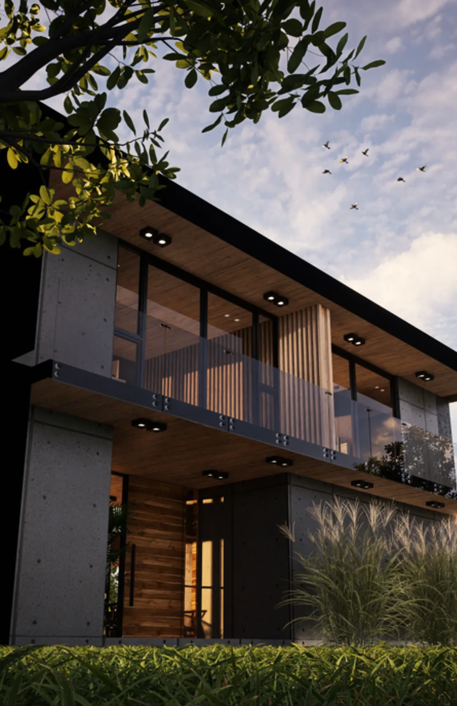
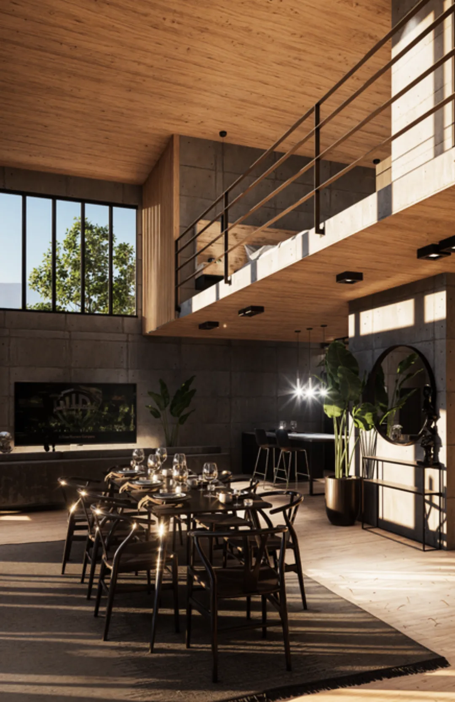
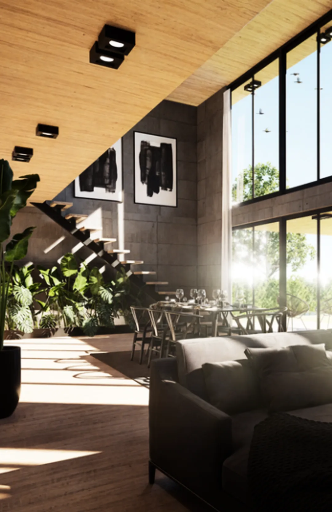

Portfolio
Obras
Viviendas, refacciones y desarrollos en CABA, Zona Norte y Zona Oeste. Cada proyecto se evalúa también como decisión económica, no solo como decisión de diseño.



¿Estás por comprar o reformar? Antes de cualquier proyecto está el Diagnóstico.